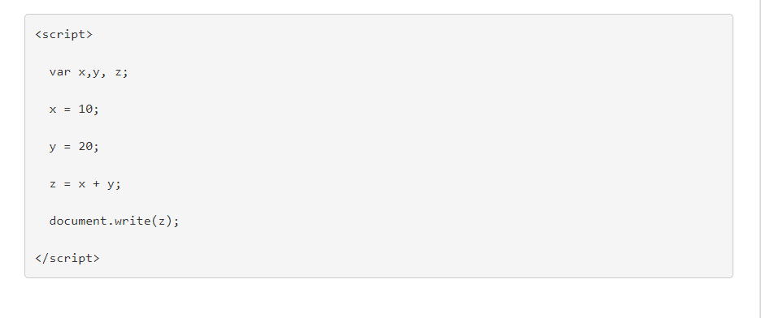

Javascript kodlama da kodlama yoğunluğu genelde fazladır. Kodlar genelde üstten alta doğru sıralanarak yazılır ve sunucu da tarayıcı da kodları bu şekilde sıraya dizerek yorumlar. Javascript İle Kodları birbirinden ne ile ayırırız? Tüm programlama dillerinde olduğu gibi kod bloklarının birbirleri ile çakışmasını önlemek için belirli ayraçlar kullanılır. Javascriptte de kod parçacığını bir diğerinden ayırmak ve hataya mahal vermemek için noktalı virgül kullanılır (;). var ile x, y, z değişkenleri tanımlanmış ve buraya kadar olan kısmın ayrı yorumlanması için noktalı virgül ile bitirilmiş. Devamındaki değişkenler de değer aldıktan sonra noktalı virgül ile bitirilmişler ve document.write komutu da aynı şekilde işlevini tamamlayabilmek için noktalı virgül ile kapatılmış. Javascript kodladığınızda bırakacağınız boşlukların bir önemi yoktur. meslek = "manav kamil"; meslek = "manav kamil"; yukarıdaki örneği incelediğinizde ilk meslek değişkeninden sonra boşluk eşittir işareti ve boşluk değişken tanımı var. Aşağıdaki örnekte o boşluklar yok. İki örnekte düzgün çalışacaktır.
